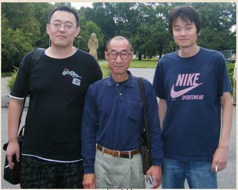

伟大的中村茂？
首页
五子棋交流
#1 伟大的中村茂？ 作者：兔子哥哥 发表时间：2009-8-4 7:35:33
呵呵，夹在大鱼和曹冬中间瘦小的中村茂！
#2 Re:伟大的中村茂？ 作者：有志青年 发表时间：2009-8-4 8:05:24
这老爷子精干呀
#3 Re:伟大的中村茂？ 作者：越狱行辕 发表时间：2009-8-4 8:51:13
我心中的神啊
#4 Re:伟大的中村茂？ 作者：王志伟123 发表时间：2009-8-4 9:08:00
神级人物！
#5 Re:伟大的中村茂？ 作者：沈毅 发表时间：2009-8-4 10:48:12

#6 Re:伟大的中村茂？ 作者：水月 发表时间：2009-8-4 13:08:56
拜～
#7 Re:伟大的中村茂？ 作者：启蒙 发表时间：2009-8-4 14:14:51
凹
#8 Re:伟大的中村茂？ 作者：傀儡 发表时间：2009-8-4 15:53:16

#9 Re:伟大的中村茂？ 作者：爱五子棋迷 发表时间：2009-8-4 20:12:07
#10 Re:伟大的中村茂？ 作者：团子亲卫队 发表时间：2009-8-6 16:51:09
#11 Re:伟大的中村茂？ 作者：没事下下棋 发表时间：2009-8-6 17:44:02
额的神啊~~~~~~~~~
#12 Re:伟大的中村茂？ 作者：密室里的蜡烛 发表时间：2009-8-7 23:43:39
浓缩的都是精华啊~~~~~~
#13 Re:伟大的中村茂？ 作者：再难也要过 发表时间：2009-8-9 15:23:47
鱼和冬各夹了一支烟……
#14 Re:伟大的中村茂？ 作者：密室里的蜡烛 发表时间：2009-8-9 17:43:32
那烟看来是中村给的,中村左手拿的像是包烟。。。
#15 Re:伟大的中村茂？ 作者：刀魂 发表时间：2009-8-9 18:59:51
相当朴素的一老人家，佩服
#16 Re:伟大的中村茂？ 作者：悉心 发表时间：2009-8-10 8:41:47
第一次看到曹冬的形像照片，与吴镝两人高度差不多。都神呀！这两人棋强吧人也够酷，都在笑呢！
还没看到过李一的照片，谁知道哪里有他的照片请提供下网址，先谢了！
上面每个人名后应该加大师呢，还是老师呢，还是其他更尊称的……
至于中村，了解尚少，暂且不盲目崇拜，只知道是棋中强人吧
#17 Re:Re:伟大的中村茂？ 作者：wd1988 发表时间：2009-8-11 10:00:04
大鱼曹东，平常可以称之为老师，称之为大师也不为过。但现在他们站在中村茂的边上，我不盲目崇拜中村，但我想任何人在此刻喊大鱼曹东一声大师，他们也是绝对不敢答应的
#18 Re:伟大的中村茂？ 作者：茗弈小刀 发表时间：2009-8-11 10:21:21
李一老师的照片在中国五子棋网上有的.
#19 Re:伟大的中村茂？ 作者：悉心 发表时间：2009-8-12 10:15:52
吴镝老师和曹冬老师无论站在中村旁，还是世界上其他任何高手旁，都可以称为大师，他们靠的是实力走出国门。在我们普通人眼中，那些活跃于国内外五子棋实战的高手们，都不愧大师称号。而常常把国外某某城市的特色餐饮或者标志性建筑挂在嘴边，以示高贵于普通人，我们普通五子棋爱好者对其是不屑一顾的，甚至鄙夷的。
谢谢小刀老师提示，我去找找看。
曹冬大师！吴镝大师！李一大师！小刀大师！无聊大师！菜农大师！小天大师！顾炜大师！海月大师！米兰大师！潇洒大师！流逝大师！白痴大师！清缘大师！有志大师！无尽大师！王烨林大师！堂堂大师……排名不分先后，未叫到名的还有很多大师！
棋品人品不值一提的人，就算是棋艺还可以，也永远不配大师称号！
#20 Re:伟大的中村茂？ 作者：勾陈 发表时间：2009-8-15 17:11:53
神